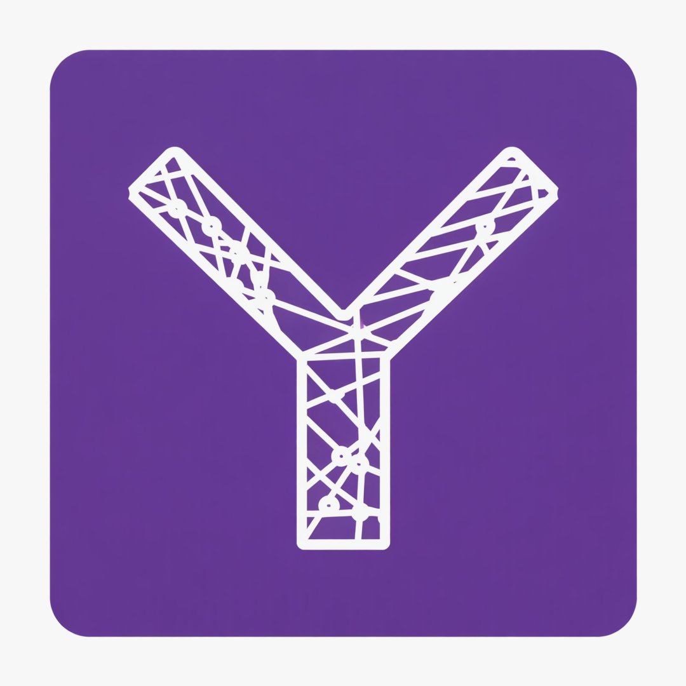

AI 학습부터 게임 자동화까지, 필요한 도구를 다운로드하세요

게임 객체 학습을 위한 올인원 AI 도구.
데이터 수집, 자동 라벨링, YOLO11 학습, 모델 내보내기까지.
v2.0.0 | Release: 2025-12-19
다운로드 (64-bit)Size: 1.86 GB | Windows 10/11
학습된 AI를 활용한 지능형 게임 자동화.
노드 에디터로 코딩 없이 누구나 쉽게 매크로 제작.
v1.0.0 | Release: 2025-12-18
다운로드 (64-bit)Size: 90 MB | Windows 10/11
| Supported OS | Windows 10, Windows 11 (64-bit) |
|---|---|
| Python | 3.10+ (내장됨, 별도 설치 불필요) |
| CPU | Intel Core i5 / AMD Ryzen 5 이상 |
| GPU (필수) | NVIDIA GeForce GTX 1060 이상 (CUDA 12.x 권장) |
| VRAM | 6GB 이상 (8GB+ 권장) |
| Memory | 16GB RAM 이상 권장 |
| Storage | SSD 10GB+ 여유 공간 |
| Supported OS | Windows 10, Windows 11 (64-bit) |
|---|---|
| CPU | Intel Core i3 / AMD Ryzen 3 이상 |
| GPU (AI Vision) | NVIDIA GeForce GTX 1050 이상 (선택) |
| Memory | 8GB RAM 이상 |
| Input Method | Hardware Driver Simulation / Software Event |
| Optional Hardware | Arduino Leonardo (하드웨어 에뮬레이션용) |